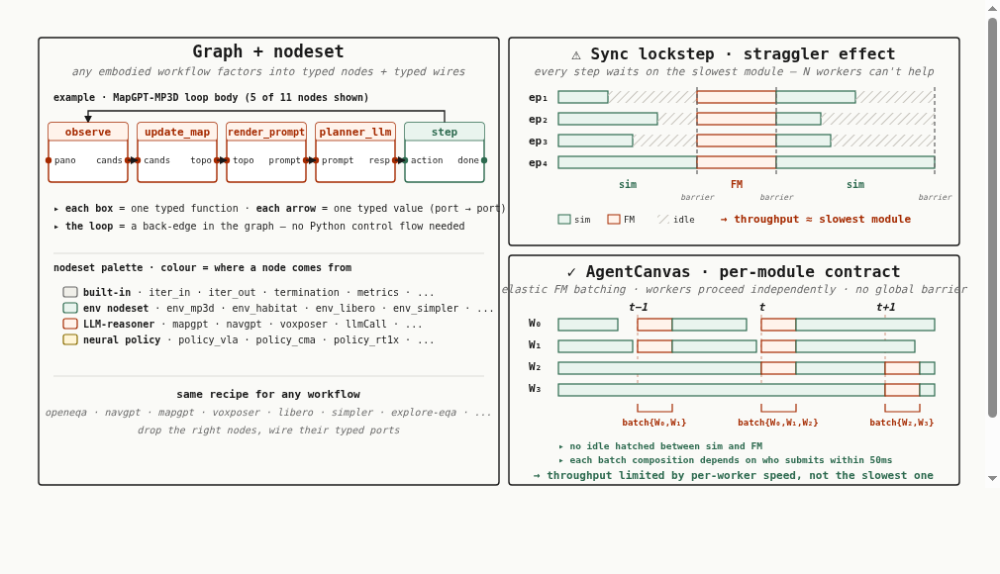
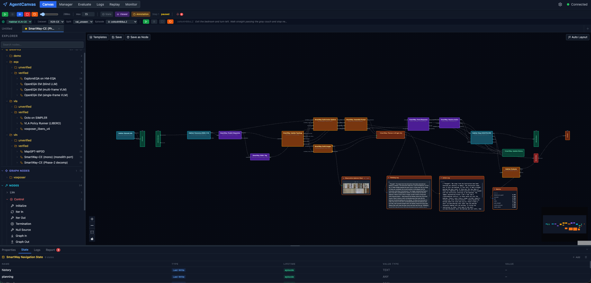
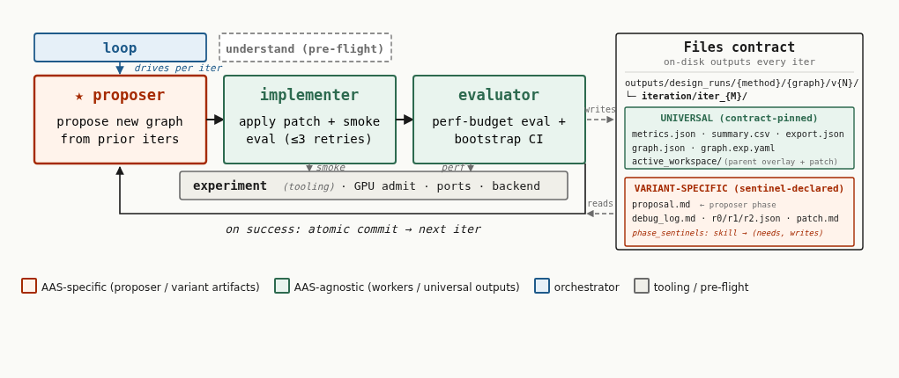

Automating the Design of Embodied Agent Architectures
One work, two pillars. A substrate that standardizes embodied agents — editable, reproducible, comparable, experimentable — so an external optimizer can act on them at all. And a methodology that uses an off-the-shelf coding agent to carry the architecture-search algorithm: it analyzes the problem, proposes a change, implements it in code, runs the experiment, and analyzes again, loop after loop.
AgentCanvas is released as a standalone platform — a visual node-graph editor, not just a paper artifact. See the substrate →
The first to bring architecture search to real embodied agents
An embodied agent composes foundation models with perception, mapping, memory, planning, and control. At every join it fixes a choice made by hand for a single benchmark, from sensor abstractions and map representations to memory state, prompt structure, planner topology, model placement, and action interfaces. As foundation models and embodied tools multiply, this space grows faster than manual iteration can cover. Could an agent do the searching instead?
Automated architecture search already does this for text agents, but the move to embodied is not a free transfer. Text-domain search runs over cheap, stateless calls and a mature palette of primitives such as chain-of-thought, debate, and self-refinement. An embodied agent instead acts in a stateful simulator, scores only through noisy multi-episode rollouts, and leans on long traces of observations, actions, and planner calls, with no ready palette of composable embodied primitives to draw on. So we take the first step in method-seeded form. Each search starts from a published agent such as MapGPT, SmartWay, ExploreEQA, or VoxPoser, and edits its graph rather than building one from scratch.
To make those agents searchable, AgentCanvas hosts each as an editable typed graph, and the search runs as a coding-agent session rather than a single in-context LLM call. A real embodied codebase has to be navigated and edited like code, not emitted as text in one shot. Each iteration proposes a graph edit, applies it, and scores it on a simulator rollout. Three optimizers share this harness. KDLoop is our evidence-driven variant, cycling through propose, critique, experiment, distill, and reflect, while ADAS and AFlow are lifted from their original single-call workflow search into the same coding-agent setting.
This is not a leaderboard. We contribute a methodology that uses an off-the-shelf coding agent to carry the architecture search, a first step toward our ultimate goal of embodied agents designed and optimized by artificial intelligence rather than by hand. We also characterize what such a search must overcome in the embodied setting, seen as a conceptual ML-like optimizer. It can stall in local optima, much as hill climbing does. Its signal can be lost in the evaluation noise of embodied rollouts. And most fundamentally, credit assignment has no gradient to rely on.
Searched architectures, deployable gains
Across navigation, embodied question answering, and manipulation, the coding-agent search setup finds rerun-confirmed gains on published executors. Each gain comes from a chain of graph edits the coding agent proposed, ran, and verified, every edit built on the one before it. The deltas below are three-pass reruns, not single-pass best-iteration peaks.
Gains are clearest when the dominant failure mode lives inside the editable graph. One apparent +9.0 SmartWay candidate is rejected as leak-bearing. It wired the evaluator's ground-truth signal into the planner. Honesty about that is part of the result.
A typed-graph substrate for embodied agents
AgentCanvas factors any embodied workflow into typed nodes (perception, memory, planning, action, LLM reasoners, neural policies) joined by typed wires, port to port. A loop is just a back-edge — no Python control flow needed — so the same recipe expresses MapGPT, VoxPoser, ExploreEQA, and SmartWay by dropping the right nodes and wiring their ports. The runtime is simulator-aware: instead of a global lockstep barrier, elastic foundation-model batching lets workers proceed independently, lifting throughput from "slowest module" to per-worker speed.


The optimizer is an off-the-shelf coding agent
A conventional embodied agent is a hand-built stack of perception, mapping, planning, and action. AgentCanvas hosts that same agent as an editable typed graph, a workspace of graph JSON, node code, prompts, and episode logs. Improving one means reading those files, diagnosing failed rollouts, and editing both the graph and the node code, so the optimizer is an off-the-shelf coding agent searching over the real codebase. The engineering stays thin. The whole harness is shared across variants, from the orchestrator that runs the loop to the implementer and the evaluator. Only the proposer and its persistent memory differ, so each ported algorithm is reproduced faithfully under one controlled comparison.

Same loop, different search minds
All three optimizers plug into the identical harness. Only the proposer and its persistent memory differ. No optimizer dominates, and they concentrate on different intervention axes.
A Reflexion-style proposer conditioned on a flat, append-only archive, with bootstrap-CI fitness. Each original proposal call runs as its own tool-augmented sub-agent, so the port keeps the method's sampling diversity.
Selects a parent candidate by score-softmax and proposes a structural edit, with anti-replay memory and injected success and failure experience. The port searches free-form graph edits where the original composed text-workflow operators.
A search loop that distills each iteration into a typed knowledge base, built for the embodied setting where every iteration yields more than a scalar score. The search accumulates knowledge of what works and what fails rather than maximizing a single noisy number.
Search-time, iteration by iteration
Pick an executor and an optimizer. Every committed iteration is a node, in search order left to right, and its height is the single-pass success-rate change over the shared baseline, the search-time fitness the optimizer selects on. Reverts and probes are flagged, and the load-bearing best is ringed. Click any node to read what changed. Across cells you will see improvement, plateau, and noisy best-selection.
A best iteration is the maximum over a sequence of noisy single-pass estimates, so it can overstate a candidate's true value. That is why the search-time peaks here usually run higher than the rerun-confirmed gains in the matrix, and why selection and confirmation are not interchangeable. Every committed iteration is shown here, with deeper per-cell detail in the appendix.
Confirmation-time, cell by cell
Hover or tap a cell to inspect the surviving change and the intervention axes it touched. ΔSR is the mean gain in percentage points over a three-pass rerun. These are the confirmed heights. The single-pass trajectories that selected them are in the search tree above.
| executor \ optimizer | ADAS↻ | AFlow↻ | KDLoop |
|---|---|---|---|
| MapGPTbase 46.9 · VLN | +2.2 | +7.6 | +7.1 |
| ExploreEQAbase 43.0 · EQA | — | +4.7 | +3.0 |
| SmartWaybase 29.7 · VLN | +4.0 | +9.0† | +1.3 |
| VoxPoserbase 9.0 · manip | +3.7 | +3.9 | —‡ |
Four executors, three task families
The matrix spans four published systems with different geometric, perceptual, and control demands, so a gain on one is not a one-trick artifact. Each runs unchanged as an AgentCanvas graph, and search starts from its own frozen baseline.
topological-map LLM planner
waypoint-predictor planner
frontier exploration + VLM scoring
zero-shot LMP + voxel value maps
What embodied AAS must still handle
Moving architecture search from text programs to perceptual agents acting in 3D exposes three constraints that stay muted in text-domain AAS. Each is a requirement for the work that follows.
Evaluation noise
A best iteration is the maximum over noisy single-pass scores, so it can overstate a candidate's true value. Variance-overlapping gains are reported as directional, not confirmed, and every gain is rerun over a three-pass floor.
Local edit basins
Once a high-scoring pathway is found, search tends to stay near the same mechanism rather than cover the editable space. Embodied AAS needs memory over the structure of attempted edits, not just over scalar scores, and it has to reason over that memory to design a genuinely new experiment instead of resampling the same basin.
Partial credit assignment
The harness exposes per-episode logs and every optimizer knows they are there, yet the ported variants keep optimizing the scalar score. Future embodied AAS should make attribution a first-class step.
Citation
@inproceedings{anonymous2026agentcanvas,
title = {Automating the Design of Embodied Agent Architectures},
author = {Anonymous},
year = {2026},
note = {Preprint, under review}
}